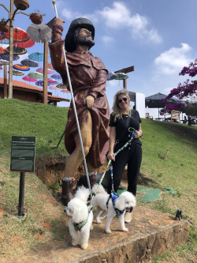
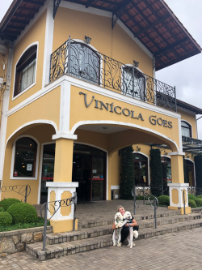
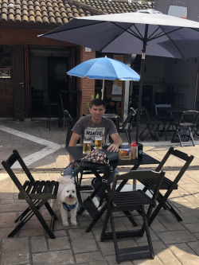

São Roque - SP
Junho/2023

|
Conhecida como cidade do Vinho, a cidade foi fundada em 16 de Agosto de 1657 pelo nobre capitão paulista Pedro Vaz de Barros, conhecido também como Vaz Guaçu, O Grande. O nome São Roque é devido a devoção de seu fundador por este santo. Atraído pela região, estabeleceu-se com sua família começando assim, a cultivar trigo e uva. Em 1832, São Roque foi elevada à condição de vila e, em 1864, à categoria de município. E, em 1990, devido ao seu grande potencial no cenário histórico, artístico, ecológico e cultural, foi transformada em Estância Turística. População: 93076 (2021) São Roque foi o destino para a nossa 1ª viagem de Kombi e ... amamos. O passeio na Rota do Vinho foi incrível e como uma boa cidade Pet Friendly, a maioria das vinícolas aceitam a entrada dos pets. |
 Primeira Parada Rota do Vinho
Primeira Parada Rota do Vinho Vinicola XV de Novembro
Vinicola XV de Novembro Vinicola XV de Novembro
Vinicola XV de Novembro Vinicola XV de Novembro
Vinicola XV de Novembro Vinicola XV de Novembro
Vinicola XV de Novembro- Vila Don Pato
 Vila Don Pato
Vila Don Pato- Vinicola Goes
- Pausa para o chopp
 Vapo Camping
Vapo Camping Vapo Camping
Vapo Camping Trilha
Trilha